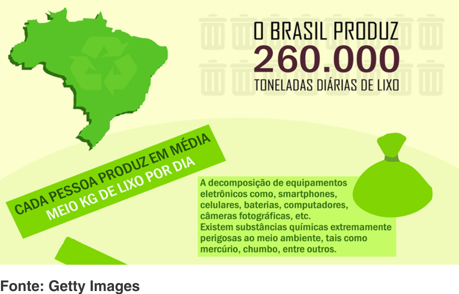

O Brasil é líder na produção de lixo eletrônico na América Latina e sétimo no mundo, segundo dados da Global e-Waste Monitor 2017. Em pesquisas da ONU, o país aparece com a marca de 1,5 mil toneladas de lixo eletrônico produzidos por ano. O ainda dificultado descarte desse material toma vias de desafio ambiental pelas empresas de tecnologia. Um problema resultante desse processo, e que está intimamente ligado ao consumo de novos aparelhos, é o lixo eletrônico. A troca dos modelos tem como efeito o descarte dos dispositivos antigos. Hoje, a maioria das fábricas ainda não tem políticas bem estabelecidas para aceitar de volta os exemplares usados, fazendo-os parar no lixo.
O lixo eletrônico contém alta concentração de metais pesados existentes nos equipamentos eletrônicos, que pode contaminar tanto o ser humano durante a sua fabricação como após. Estes materiais, quando jogados em aterros não controlados e lixões, podem contaminar o solo e atingir o lençol freático, interferindo na qualidade dos mananciais. Caso a água venha a ser utilizada na irrigação, criação de gado ou mesmo no abastecimento público, o homem pode ser afetado.
Os elementos químicos presentes no lixo eletrônico podem causar diversos problemas de saúde no ser humano. A contaminação no homem pode ocorrer pelo contato direto com os elementos químicos, que entram na fabricação dos equipamentos eletrônicos.
| MATERIAIS | DANOS À SAÚDE | ||
|---|---|---|---|
| CHUMBO | Provavelmente, o elemento químico mais perigoso; acumula-se nos ossos, cabelos, unhas, cérebro, fígado e rins; causa dores de cabeça e anemia, mesmo em baixas concentrações; age no sistema nervoso, renal e hepático. | ||
| MERCÚRIO | Altamente tóxicas concentrações entre 3 g e 30 g podem ser fatais ao homem; é de fácil absorção por via cutânea e pulmonar; tem efeito cumulativo; provoca lesões no cérebro; tem ação teratogênica - malformação de fetos durante a gravidez. | ||
| CÁDMIO | Acumula-se nos rins, fígado, pulmões, pâncreas, testículos e coração; causa intoxicação crônica; provoca descalcificação óssea, lesões nos rins e afeta os pulmões; tem efeitos teratogênicos e cancerígenos. |
As fábricas estão começando a tomar iniciativas para evitar esse acúmulo, que é consequente das três formas de obsolescência encontradas. Existe uma regulamentação (Lei nº 12.305/10) que determina que as empresas minimizem a produção de resíduos e criem iniciativas para recolhimento de maneira adequada dos produtos pós-consumo. Apesar de não ser completamente espontânea, a medida já colabora para que a produção do lixo eletrônico seja menor. Nem todas as fábricas participam do movimento por vontade própria, mas a obrigação sob a lei que determina a medida já é um grande avanço para a mudança que pode ocorrer no futuro.